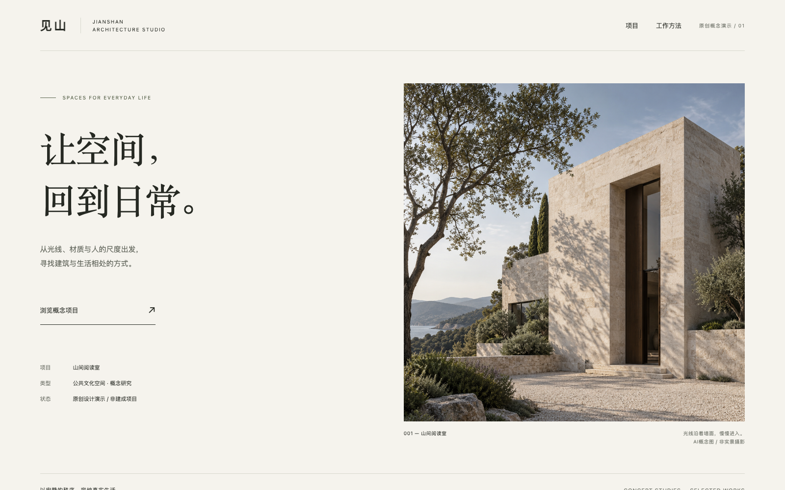

给 Codex 用的设计 Skill
让好设计，
有章可循。

01 / 网页见山工作室
打开完整网页 原创概念演示 · 上图为实际页面排版，照片素材由 GPT 生成
01 / 原创作品档案
六组作品，
逐一展开。
从空间到物件，从观点到目录。
看完整网页，也可以逐页读一份PPT。
以上均为原创概念演示，不代表真实客户项目或商业实绩。建筑、音箱与工艺静物由 GPT 生成；页面、幻灯片与图表实际排版并渲染。
02 / 选择合适的方向
气质，来自选择。
展开一种风格，看适合什么内容，
也看它与作品、参考之间的关系。
03 / 从参考到成品
把内容做成完整作品。
把审美放进制作过程，
最后回到实际页面和幻灯片。
- 01
读内容
先确认受众、用途与必须保留的信息，知道作品需要说明什么。
- 02
选参考
选2–4个相关参考，明确吸收图文比例、标题位置还是索引关系。
- 03
建排版
确定字体、色彩与网格，完成关键页，再把规则延伸到整套作品。
- 04
看成品
在浏览器和导出的幻灯片中检查中文、裁切、阅读顺序与交互。
本页的设计依据
Chipperfield 的图像边界、Pentagram 的项目图注、Capella 的大小图文关系。参考品牌的摄影与作品没有用作本页的原创案例。
参考 124 / 132 / 187 ↗01 / 安装到技能目录
git clone https://github.com/michalflowers245-alt/premium-web-ppt.git \
"${CODEX_HOME:-$HOME/.codex}/skills/premium-web-ppt"
02 / 选一个调用起点
用 $premium-web-ppt，把这些内容做成清楚、有气质的品牌网页。 先看相关参考，选择合适的方向，保留已有事实与认可部分。 完成桌面和手机预览检查后交付。
基础使用依靠仓库里的配方、图集与分析，无需原始大文件。只要求提示词时，就交付提示词。